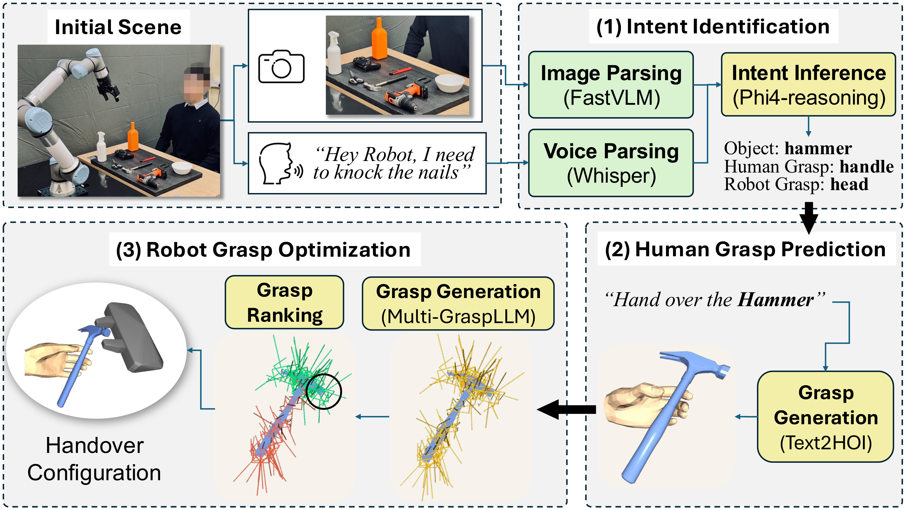
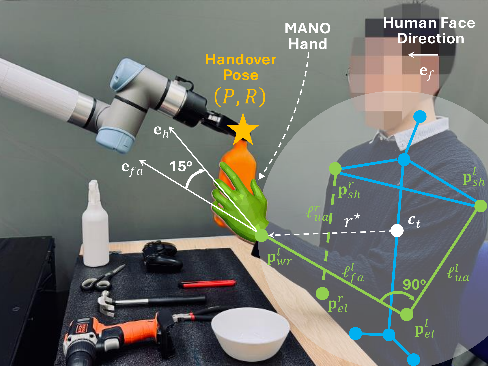
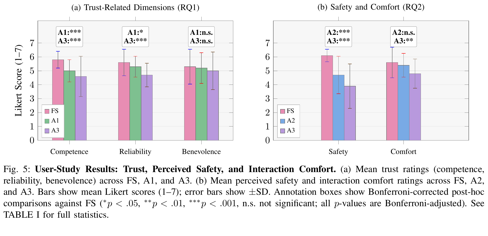
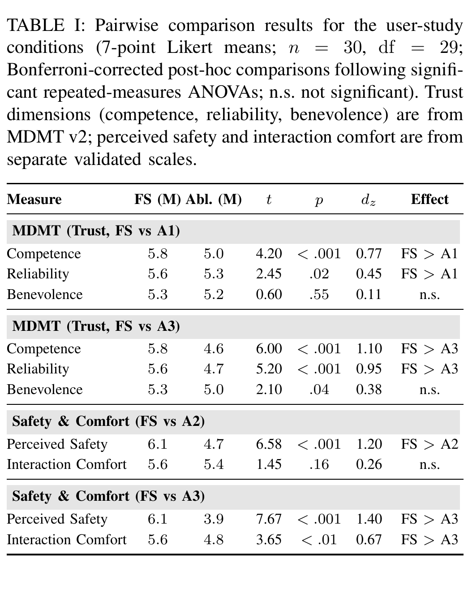
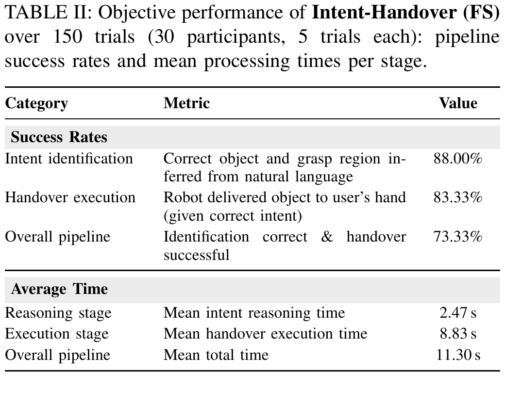

Phase 1
Intent-Guided Grasping
Ground spoken instructions and visual cues into explicit grasp constraints for safe handover planning.

Intent Grounding
Inferring human handover intent from visual and verbal cues.
Grasp Optimization
Selecting robotic grasps based on affordance and safety constraints.
Design Validation
Validating the system design principles through user studies.
Intent-Handover is organized into two phases: intent-guided grasping and ergonomic execution.
Ground spoken instructions and visual cues into explicit grasp constraints for safe handover planning.

Execute the selected grasp while aligning the object with the receiving hand for ergonomic delivery.

The front shows the staged handover procedure; the back shows representative user-study samples.

Objects cover diverse shapes, affordances, and human-usage regions for evaluating grasp selection.

We studied how Intent-Handover affects trust, safety, and comfort during real handovers.
Correctly inferring the intended object alone is insufficient; grasping an inappropriate region may still undermine trust.
Users trust the robot more when it delivers the object in a grasp that is easy for them to use.
These results support H1. Overall, competence is the most sensitive trust dimension; benevolence did not reach significance in either contrast after Bonferroni correction.
Even if users can adjust their receiving pose, neglecting hand-gripper collision avoidance may reduce psychological safety.
Users feel less safe and comfortable when the robot does not optimize for hand-gripper collision avoidance.
These findings partially support H2: disabling hand-gripper collision avoidance alone significantly reduces perceived safety, but comfort does not decrease until human-usage region awareness is also removed.
Human-usage region awareness improves perceived competence and reliability, while hand-gripper collision avoidance mainly improves perceived safety.

Full Strategy outperforms the ablations on competence, reliability, perceived safety, and combined comfort.

Intent identification succeeds in 88.00% of trials, with an 11.30 s mean total pipeline time.

@inproceedings{zhang2026intenthandover,
title={Intent-Handover: Grounding Language in Human-Usage Regions for Trustworthy Robot-to-Human Handovers},
author={Zhang, Hanxin and Dhafer, Abdulqader and Dong, Hongbiao and Hao, Zhou Daniel},
booktitle={IEEE/RSJ International Conference on Intelligent Robots and Systems},
year={2026}
}